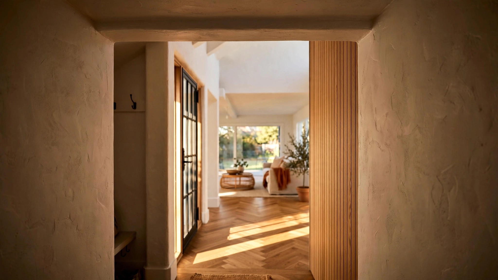

Your AI Floor Plan Deleted the Space Between Rooms. Your Brain Noticed.

Open the front door of a house designed before 1990 and you step into something. A vestibule. A foyer. Maybe just a three-foot-deep alcove where the tile changes to hardwood and the ceiling drops two inches and the sightline narrows before it opens. You are not in the living room yet. You are somewhere else first, somewhere with no furniture and no function except to let you stop being outside before you start being inside. The space has no name on the floor plan. It might not even have its own light fixture. But your nervous system registers it. You exhale. You put your keys down. You are, for one unremarkable second, arriving.
Open the front door of a house designed by Maket.ai, or Snaptrude, or any of the dozen AI floor plan generators now used by over a million architects, builders, and homeowners worldwide, and you step directly into the living room. The algorithm allocated those forty square feet to a larger kitchen island. The vestibule did not survive the optimization.
What the Algorithm Sees
Every AI floor plan tool on the market in 2026 accepts the same basic input: a list of rooms. Three bedrooms. Two bathrooms. Kitchen. Living room. Dining area. Garage. You specify square footage, lot dimensions, maybe adjacency preferences. It generates layouts in seconds, labels every room, calculates dimensions, exports to DXF or Revit. Maket.ai, the most widely used platform with over a million registered users, produces multiple variations from a single brief. Snaptrude generates BIM-ready geometry at LOD 300, factoring adjacencies, zoning codes, and climate data. ARCHITEChTURES adds regulatory compliance checks. Architects report reclaiming eight to twelve hours per week on early-stage work.
Not one of these tools asks about the space between rooms. Not the foyer between the front door and the living room. Not the mudroom buffer between the garage and the kitchen. Not the landing at the top of the stairs. Not the six-foot stretch of hallway where the ceiling height changes before the master suite. These spaces have no room type. They have no program requirement. They have no checkbox in any zoning calculation. And because AI floor plan generators optimize against the list you give them, and transitional spaces are never on the list, the algorithm treats them as waste to be reclaimed for something nameable.
In architectural programming, the standard practice is to add a circulation factor to net square footage: 10 to 30 percent depending on the ratio of enclosed to open spaces. But the language matters. "Circulation" implies movement from one destination to another. It frames the hallway as overhead, the vestibule as a cost, the landing as something you pass through on your way to somewhere that counts. This is the language AI tools have internalized. Pro Builder, the industry's most-read publication for production homebuilders, states it explicitly: going from a one-story to a two-story plan creates "additional square footage in the stairs themselves" and the paths to them, which is "not exactly valuable square footage."
For thirty years, the construction industry has been telling itself that the space between rooms is not valuable. AI tools finally believed it.
What Your Brain Sees
In 2011, Gabriel Radvansky at the University of Notre Dame published what became one of the most replicated findings in environmental cognition. Participants carried objects through a virtual environment and were tested on their recall. Those who passed through a doorway were significantly more likely to forget what they were carrying than those who walked the same distance within a single room. Radvansky called it the "doorway effect," and the explanation was not distraction but context updating: when the brain registers a spatial boundary, it closes the current cognitive context, reduces accessibility to the previous one, and opens a new attentional frame.
A 2021 replication at Bond University and UCL refined the finding. The doorway itself was not the trigger. The trigger was change of environment. When researchers made the rooms on either side of the doorway visually identical, the forgetting effect diminished. What caused the cognitive reset was not the architectural element but the perceptual shift it created: different light, different proportions, different materials, different scale. The researchers noted that this is "efficient for cognition" because "it's more efficient for us only to retrieve information about the current situation, rather than remembering all the information from everything we've recently experienced."
In a 2022 study published in Cognition, Buckley, Myles, Easton, and McGregor at Durham University demonstrated that the spatial layout of doorways and environmental boundaries shapes not just whether memories form but what those memories contain. How you move through space determines what you remember of living in it.
A mobile EEG study published in Frontiers in Human Neuroscience took this further. Researchers recorded brain activity while participants walked through different interior architectural forms in virtual reality, measuring real-time neural responses to spatial transitions. They found that transitions between spaces activated the anterior cingulate cortex, a brain region involved in attention allocation and error monitoring. Theta-band activity in the ACC correlated significantly with architectural feature changes and geometric shifts (r = 0.525, p = 0.037 for feature types; r = -0.579, p = 0.019 for geometry). Architectural transitions are not aesthetic preferences. They are neurological events.
The Grammar of In-Between
Miriam Hoffman's research on "places of pause," cited in a May 2026 Psychology Today review of the neuroscience of liminal spaces, describes how spatial thresholds function as cognitive reset mechanisms. They allow the brain to close one context, open another, and reallocate attention. Hoffman's framework describes "graduated transitions" rather than sharp breaks, where the brain adjusts incrementally rather than forcing an abrupt reset.
Traditional residential architecture was full of these gradients. A Craftsman bungalow has a deep front porch (public to semi-public), a vestibule with coat hooks (semi-public to threshold), a short entry hall (threshold to private), and then the living room. Four spatial zones in roughly twelve linear feet. Each shift is marked by a change: ceiling height drops, floor material changes, light source shifts from natural to artificial, width narrows then expands. Your brain processes each change as a micro-boundary, and by the time you reach the sofa, you have undergone four cognitive context updates. You are not just physically inside. You have arrived.
An AI-generated floor plan for the same footprint has a front door that opens into the living room. One context update. Zero graduated transitions. The efficiency ratio is excellent.
As the Psychology Today analysis states directly: "When the brain registers a new spatial context, it prioritizes incoming information and reduces accessibility of the previous context. Well-structured thresholds improve clarity, support transitions between tasks, and enhance memory organization." And then the consequence of their absence: "Open plans without clear segmentation increase cognitive load. Context boundaries blur, memory encoding becomes less distinct, attention lacks reset points."
Quantifying What's Missing
A well-designed 2,200-square-foot home, drawn by an architect who thinks about spatial sequence, might dedicate 150 to 250 square feet to deliberate transitional spaces beyond minimum code circulation. That is seven to eleven percent of the total floor area. A vestibule at the front entry: 40 square feet. A mudroom between garage and kitchen: 50 square feet. A wider landing at the top of the stairs with a window seat: 35 square feet. A hallway that expands from 36 inches to 54 inches before the master suite door, with a ceiling that rises eight inches: 25 square feet. An alcove at the transition from the public living area to the private bedroom wing: 30 square feet.
An AI-optimized plan for the same 2,200 square feet allocates all of that space to room area. Bedrooms gain twelve square feet each. The kitchen island grows by eighteen inches. The walk-in closet hits the magic 8-by-10 threshold that real estate listings highlight. The plan scores better on every metric these tools track: room dimensions, program compliance, efficiency ratio. Every square foot has a name.
At median construction costs of $150 to $350 per square foot, those 200 square feet of transitional space represent $30,000 to $70,000. That is the cost of the spatial grammar that separates a house from a container.
What AI Would Need to Measure
A 2026 paper in MDPI Buildings introduced the Residential Floor Plan Assessment (RFP-A) framework, the most rigorous evaluation system yet built for AI-generated layouts. It measures four things: room number compliance, connectivity via graph edit distance, room locations using a rotated coordinate system, and geometric features through intersection-over-union analysis. Six generative models were evaluated, and only two, HouseDiffusion and FloorplanDiffusion, achieved above 90 percent accuracy on room number compliance.
Nowhere in this framework does a metric exist for transitional space quality. There is no score for whether the plan creates meaningful thresholds between public and private zones, between indoor and outdoor, between active and quiet. There is no arrival-sequence evaluation. There is no spatial compression metric. There is no measurement of how it feels to walk from the front door to the kitchen. The most advanced evaluation framework for AI floor plans literally cannot distinguish between a layout that creates four graduated transitions in twelve feet and one that drops you from the porch directly onto the sofa, because both satisfy the same room list.
What these tools would need, and what nobody has built yet: a spatial-sequence metric that evaluates not just what rooms exist but how moving between them is structured. A threshold-quality score that assesses whether transitions between zones involve changes in width, height, light, or material. A proportional-shift analysis at every point where two spaces meet. An arrival-sequence evaluation that models the perceptual experience of entering the home from the front door and from the garage. These are the metrics that would transform AI floor plan generation from a room-packing exercise into something that accounts for how humans actually experience the spaces they live in.
The Strongest Counterargument
Square footage costs money. In a market where affordability is the primary barrier to homeownership, and where the median new home price exceeds $400,000, arguing for "ceremonial space" is a luxury position. Many buyers would trade a vestibule for a larger pantry without hesitation. Open-concept design, which deliberately eliminates transitions, has been the dominant buyer preference for more than fifteen years, and the market expressed that preference long before AI tools encoded it. Builders did not need an algorithm to tell them that hallways do not sell houses.
This is a fair objection, and it deserves an answer that does not rely on romantic notions of what homes should be. The answer is that transitional spaces do not require additional square footage. They require different allocation of the same square footage. A vestibule is not space added to the plan. It is the front corner of the living room, redefined by a ceiling change, a floor material shift, a half-wall, or a three-foot setback of the main space from the entry door. These are drawing decisions, not material decisions. They cost the same lumber, the same drywall, the same labor. What they cost is the willingness to leave forty square feet unnamed on the room list, and that is exactly the trade-off that AI tools, optimizing against named rooms, are structurally incapable of making.
What to Check Before You Build
If you are reviewing an AI-generated floor plan, or any floor plan, look for these five things. First: can you identify the moment you stop being outside and start being inside, and does it involve a spatial change, not just a door? Second: is the path from the garage to the kitchen buffered by anything, a mudroom, a landing, a width change, or does the garage door open directly into the cooking space? Third: does the hallway between the public rooms and the private rooms involve any shift in width, height, or character, or is it a uniform 36-inch tunnel? Fourth: at the top of the stairs, is there a landing that feels like a place, or does the staircase terminate directly into a corridor? Fifth: can you trace the path from the front door to the farthest bedroom and identify at least three moments where the space changes character?
If the plan has fewer than three transitions in that path, you are living in a plan that treats every square foot as a room and none as the space between rooms. The algorithm that drew it was solving for efficiency. Your anterior cingulate cortex, the part of your brain that processes architectural transitions and allocates your attention, was not part of the optimization.
Limitations
No study has directly compared AI-generated floor plans against architect-designed plans specifically on transitional-space allocation. The doorway effect and event-segmentation research was conducted in controlled laboratory and virtual-reality settings, not in residential environments over months of continuous occupancy, and the translation from short-term experimental forgetting to long-term residential well-being is plausible but not yet validated longitudinally. "How a home feels" varies by culture, climate, household composition, and individual neurology. AI floor plan tools are evolving rapidly, and future versions may incorporate spatial-quality metrics that current tools lack. The cost estimates for transitional space use national median construction costs and will vary by market.